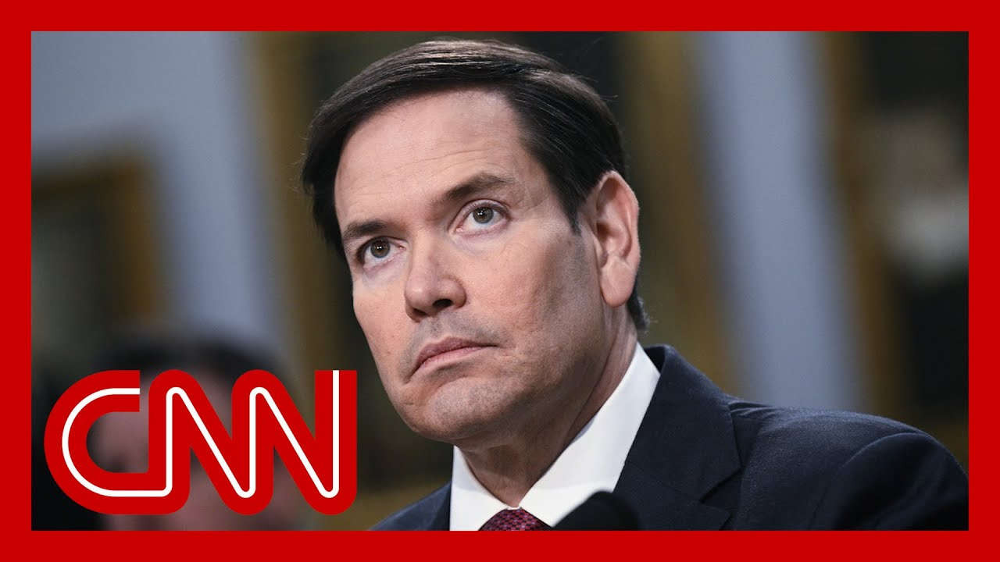

【特朗普政府将“积极撤销”中国学生签证】
Summary: 美国国务卿马可·鲁比奥宣布，美国将“积极撤销中国学生签证”，此举标志着与北京关系的重大升级，也对美国高等教育机构造成了又一重创。
摘要： The United States will “aggressively revoke visas for Chinese students,” Secretary of State Marco Rubio announced Wednesday in a major escalation of tensions with Beijing, and another blow to American higher education institutions.

⏱️ Estimated Reading Time: 15 min
So United States will aggressively revoke visas of Chinese students.
美国将积极撤销中国学生的签证。
That is the message, the warning and the threat really now coming from the Secretary of State, Marco Rubio, announcing that the Department of State will be targeting those, quote, with connections to the Chinese Communist Party or studying and critical fields.
这是国务卿马可·卢比奥发出的信息、警告和威胁，宣布国务院将针对那些“与中国共产党员有关联或学习关键领域”的学生。
This is expected to further rock the already shaky 90 day truce that China with China on tariffs with the Trump administration, and also further rocked this blanket of uncertainty hanging over colleges and universities across the country.
此举可能进一步动摇本已脆弱的90天关税休战协议，并加剧美国高校的不确定性。
First and foremost, when it comes to Harvard.
首先，这涉及哈佛大学。
For 15 years, China was the top source of international students studying in the United States.
15年来，中国一直是美国国际学生的最大来源国。
That is until India took the lead just last year.
直到去年被印度超越。
So let's get this is it could have a huge impact.
因此，这一政策可能产生巨大影响。
CNN's Jennifer Handler has much more on this.
CNN的詹妮弗·汉德勒对此有更多报道。
She's tracking this announcement.
她正在追踪这一声明。
Jen, what are you learning about what the Secretary of State is saying here?
詹，你对国务卿的表态有何了解？
Well, Kate, this surprise announcement from Secretary Rubio last night is a further escalation of tensions with Beijing is also poised to be a further blow to higher education institutions here in the United States.
凯特，卢比奥国务卿昨晚的意外声明进一步加剧了与北京的紧张关系，也可能对美国高等教育机构造成进一步打击。
Now, this announcement was pretty sparse on details.
目前，这一声明缺乏细节。
It says that they will aggressively revoke visas for Chinese students, including those with connections or studying in critical fields.
声明称将积极撤销中国学生的签证，包括那些与中国共产党员有关联或学习关键领域的学生。
But the secretary of State does not define what those critical fields are, or how they are going to establish a connection to the CCP, given how ubiquitous it is in China.
但国务卿并未定义“关键领域”是什么，也未说明如何确定与中国共产党的关联，因为该党在中国无处不在。
Will it just be that a family member is a member, that the student themself is a member?
是仅凭家庭成员是党员，还是学生本人是党员？
Those questions remain unanswered.
这些问题仍未得到解答。
Now, there's also questions about how they are going to further revise their visa vetting process for those from China in Hong Kong.
此外，还有人质疑他们将如何进一步修订对中国大陆和香港申请人的签证审查程序。
It is notable that the Secretary of State said they would be working with the Department of Homeland Security on the visa revocations, which indicates that they are going to be aggressive about potentially not allowing these students to remain in the United States once their visas are revoked.
值得注意的是，国务卿表示将与国土安全部合作撤销签证，这表明他们可能会积极阻止这些学生在签证被撤销后留在美国。
Now, this is just among a slew of actions that the administration has taken over the past several days targeting visas, especially those for international students.
这只是政府过去几天针对签证（尤其是国际学生签证）采取的一系列行动之一。
On Tuesday, the State Department ordered all of its embassies and consulates around the world to pause all new visa appointments for students and exchange visa applicants.
周二，国务院命令全球所有使领馆暂停学生和交流签证申请人的新预约。
This pause is so they can work on an expanded social media vetting policy.
暂停是为了制定扩大的社交媒体审查政策。
They say that this policy guidance is going to be rolled out in the coming days, but it is likely to have an impact on the number of students who will be able to obtain those visas and come and study That in turn, of course, is going to impact universities here who rely on these students for enrollment numbers and tuition money.
他们表示政策指南将在未来几天发布，但这可能会影响获得签证并来美学习的学生人数，进而影响依赖这些学生入学率和学费的美国大学。
I should also note that they escalated their feud with Harvard.
我还需指出，他们升级了与哈佛大学的争端。
I learned from senior administration officials last night that they are now reviewing the visas of all Harvard affiliated visa holders, not just students.
昨晚我从政府高级官员处获悉，他们正在审查所有哈佛相关签证持有者的签证，而不仅是学生。
Kate.
凯特。
That is an important, important new development as well.
这也是一个非常重要的新进展。
Thank you so much and great reporting as always.
非常感谢，一如既往的优秀报道。
In another blow to international students and higher education across the U.S., the State Department says that it will work to stop some Chinese students from attending school in the US.
美国国务院表示将阻止部分中国学生来美就读，这对国际学生和美国高等教育又是一次打击。
U.S. Secretary of State Marco Rubio announced Wednesday that the administration will, quote, aggressively revoke visas Now, it's unclear exactly how many are affected, but according to a government report, more than 275,000 students from China studied in the United States in 2023 to 2024 and that academic year.
美国国务卿马可·卢比奥周三宣布，政府将“积极撤销签证”。目前尚不清楚具体受影响人数，但根据政府报告，2023至2024学年有超过27.5万名中国学生在美国学习。
Meantime, there is a new escalation in President Trump's feud with Harvard.
与此同时，特朗普总统与哈佛大学的争端再次升级。
Senior State Department officials telling CNN the agency is now reviewing all visa holders affiliated with Harvard, not just students.
国务院高级官员向CNN透露，该机构正在审查所有哈佛相关签证持有者，而不仅是学生。
The officials did not say why the review was being conducted, though.
但官员未说明审查原因。
On Wednesday, Trump suggested that the Ivy League school should have a 15% cap on the percentage of foreign students that it accepts.
周三，特朗普建议这所常春藤盟校将外国学生比例上限设为15%。
We want to know where those students come or they troublemakers.
我们想知道这些学生来自哪里，或者他们是否是麻烦制造者。
What countries do they come?
他们来自哪些国家？
And we're not going to if somebody is coming from a certain country and they're 100% fine, which I hope most of are, but many of them won't be.
如果某人来自某个国家且完全没问题（我希望大多数如此），但我们不会允许，因为许多人并非如此。
You're going to see some very radical people.
你会看到一些非常激进的人。
They're taking people from areas of the world that are very radicalized, and we don't want them making trouble in our country.
他们接收来自世界极端化地区的人，我们不希望他们在我国制造麻烦。
On Thursday, a federal judge in Boston will be hearing arguments on whether Harvard's international students should be indefinitely protected following Trump's attempt to revoke the university's student visa program.
周四，波士顿一名联邦法官将就哈佛国际学生是否应在特朗普试图撤销该校学生签证计划后获得无限期保护听取辩论。
We're being used like pawns in a game that we have no control of, and we're being caught in this crossfire between the white House and Harvard, and it feels incredibly dehumanizing to start from one of the many students there whose futures are effectively in limbo.
“我们像棋子一样被利用，夹在白宫和哈佛的交火中，感觉极其非人化。”一名未来悬而未决的学生表示。
Harvard has refused to give in to Trump's demands to make changes to its admission and curriculum.
哈佛拒绝屈服于特朗普对其招生和课程改革的要求。
Administration officials in the Trump administration have repeatedly said that Harvard is being used as an example, and they say other universities may also face similar harsh actions as well.
特朗普政府官员多次表示哈佛被用作范例，其他大学也可能面临类似严厉行动。
Now, Hegarty is a professor of management at the Tobin College of Business at Saint John's University in New York.
赫加蒂是纽约圣约翰大学托宾商学院的管理学教授。
Professor, it's good to.
教授，很高兴……
Good to have you with us.
欢迎您。
Thank you for having me this evening.
感谢今晚邀请我。
I want to cover as much as we can here and start off with your thoughts on the Trump administration making yet another move on Wednesday night that could possibly further deter international students from looking to the U.S. to study and work this time.
我想尽可能多地讨论，首先请您谈谈对特朗普政府周三晚间再次行动的看法，这次可能进一步阻止国际学生来美学习和工作。
Obviously, according to the Secretary of State, revoking visas of Chinese students and doing so aggressively, as the secretary put it.
显然，根据国务卿的说法，将“积极撤销”中国学生签证。
What do you make of this latest move from the white House?
您如何看待白宫的最新举措？
Well, I think this is a temporary move.
我认为这是临时举措。
I think revoking these visas is not in the best interest of not only China, but also the United States and the Chinese.
撤销这些签证不符合中国、美国乃至中国人民的最佳利益。
The richest of the Chinese send us students overseas to be educated.
最富有的中国人送学生出国接受教育。
And the United States has always welcomed them.
美国一直欢迎他们。
And I just don't see long term how that's beneficial to either country.
我看不出长期来看这对任何一方有利。
And earlier this week, I did have a chance to interview an international student at Harvard.
本周早些时候，我采访了一名哈佛国际学生。
And he told me that the long term consequences of sending a message and discouraging students with that message from coming to the US to study and maybe even integrate their talents in the U.S. workforce.
他告诉我，传递这种信息并阻止学生来美学习甚至将其才能融入美国劳动力市场，其长期后果深远。
That those consequences could be far reaching, especially industries like tech, science, AI, engineering, etc. in your view, professor, where else could these potentially disillusioned students turn to, if not the U.S.?
尤其在科技、科学、人工智能、工程等领域。教授，您认为这些可能失望的学生若不选择美国，还能转向哪里？
And how much of a loss would it be for this country?
这对美国将是多大损失？
Well, it would.
首先，这对美国是巨大损失。
First of all, it would be a great loss for this country because they've always added value to the country in terms of their presence in universities, but also economically.
因为他们在大学的存在和经济上都为国家增值。
If you look at states such as California, $3 billion, it influx of money into California, New York alone is a $2 billion, financial part for, for our country.
例如加利福尼亚州流入30亿美元，仅纽约就贡献20亿美元。
So it's not good to not have these countries or have these students in our country in terms of where else they could go for many years now.
因此，没有这些学生对我国不利。多年来，澳大利亚和欧洲国家一直争取这些学生。
Countries such as Australia and European countries have been vying for these students to go to their countries instead of United States.
但记住，这些学生始终希望与各自领域最优秀的人交流。
But remember, these students have always wanted to rub shoulders with the best and brightest in their fields.
而美国仍是首选。
And right.
因此，我认为他们仍希望来美。
No, that's still remains the United States of America.
这只是需要更多文书工作。
So I still see them wanting to come here, and it's just a case of compliance going through more more paperwork together.
我不认为这会大幅阻止学生来美。
But I do not see this as a major deterrent in students coming to the US.
是的，这些才华横溢的年轻人已证明自己的能力。
Yeah.
这只是一个额外障碍，他们无疑能克服。
Many of these amazing, talented young men and women have already proven their their abilities.
教授，您是否听说有大学已调整招生策略？
so this would certainly be just one more barrier for them, and no doubt that they could, overcome that.
我认为现在调整招生策略为时过早。
Have you heard, professor, of any universities already adjusting their admissions strategies?
大型大学会利用其国际校区接收学生，再转入美国。
I think it's too soon to adjust admissions strategies because all this is just happening.
其他大学可能让学生先在线学习，待风波过后再赴美。
No larger universities will use their international campuses that they have to onboard students before they bring them into the United States.
我不认为学生流动会放缓。
Other universities will probably have students take courses online while this passes over, and then they will move to the United States.
教授，请问您本人曾是国际学生吗？
I don't see the flow students slowing down.
是的，我曾是国际学生。
And I was going to ask, professor, if I may ask, are you a former international student yourself?
我来自爱尔兰，考虑过美国多所大学。
Indeed, I was a former international student.
我来到纽约圣约翰大学，经历美好，随后在此开启职业生涯，最终结婚生子并为社会做贡献。
I came from Ireland.
国际学生确实为社会做贡献。
I considered a number of universities in the United States.
更重要的是，他们回国后成为美国的优秀大使。
I came to New York, actually came here to New York, to Saint John's University in New York, had a wonderful experience.
鉴于您的个人经历，您的话很有分量。
They embarked upon a career in industry here, ultimately ended up getting married, having a child and contributing to society here.
最后，您对亚洲、欧洲、拉丁美洲或世界各地有志来美学习但因当前美国政治气候感到沮丧的年轻学生有何建议？
So these international students do to contribute to society here.
我会说，一直都有繁琐手续。
But moreover, when they go back to their home countries to serve as wonderful ambassadors for the United States when they go home because of your personal experience, what you say certainly carries a lot of weight.
不要气馁，这一切终将过去。
So finally, perhaps a message that you would have to a young student in Asia, Europe, Latin America, anywhere in the world who has their sights set on studying in the US, but may feel discouraged given what we're experiencing right now in the U.S. given that political climate, what would you tell them?
学生只需通过额外审查程序。
I would say there's always been red tape.
一旦审查完成，学生来美应无问题。
There's always been paperwork.
赫加蒂教授，非常感谢您的见解和鼓励。
Do not be deterred.
您显然是成功典范。
This too shall pass.
教授，我们感谢您。
It's just a matter of compliance and just an extra layer of compliance the students have to go through.
What is vetting process is complete.
I think students will have no problem coming in here to administer these.
Professor haircut, thank you so much for your insight.
And, and certainly your encouraging words.
clearly a success story.
Professor.
We appreciate you.